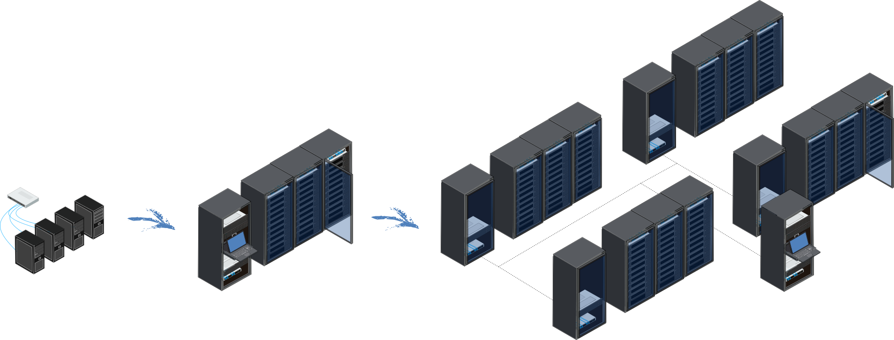

1. Introduction¶
BlueBanquise is a generic stack, based on Ansible, whose purpose is to deploy and manage clusters of hosts. These clusters can be from few workstations in enterprise to very large HPC or servers farm clusters.
BlueBanquise is the result of a need. A need for a very simple stack, not based on multi languages scripts difficult to maintain. A stack that can keep simplicity while managing very complex architecture.
The BlueBanquise project also aims to train new system administrators to the deployment of bare metal servers.
The stack rely on Ansible. Ansible was chosen for its simplicity and its security. The Ansible inventory groups/variables mechanism can cover from very simple to very sophisticated configurations. Ansible is not the fastest tool, nor the simplest to debug. However, it is easy to learn, and widely used today with an active community.
The BlueBanquise stack is made of two main parts:
The CORE, aimed to deploy operating system and base services on hosts
The COMMUNITY, aimed to provide specialized features over the CORE (HPC, render farm, etc.)
This documentation is structured as the following:
Few basic vocabulary
A full Cluster system administration training, independent of the stack
A full Ansible training, independent of the stack
- Procedure to install BlueBanquise CORE
Bootstrap first management host
Configure BlueBanquise
Deploy BlueBanquise configuration and other nodes via network (PXE)
(Optional) Deploy a multi icebergs cluster
(Optional) Deploy diskless nodes
- Procedures to specialize the cluster using BlueBanquise COMMUNITY
Deploy an High Availability cluster, based on Corosync/Pacemaker and HAproxy
Deploy Prometheus (Monitor your cluster)
Deploy Slurm (Specialize your cluster for High Performance Computing or a Blender render farm)
Few words on how to test the stack into containers
If you encounter any bugs/issues or have any comments, please inform us.
Note that if you wish are new to cluster management system administration, a full manual tutorial is available on github.
Note also that since BlueBanquise is a multi-distribution based stack, parts of the documentation may be dedicated to a specific Linux distribution (always explicitly mentioned).
We hope you will enjoy this stack as much as we do.
If you need help, do not hesitate to use the discussions tab of the project’s github.
Next step is to grab few basic Vocabulary.